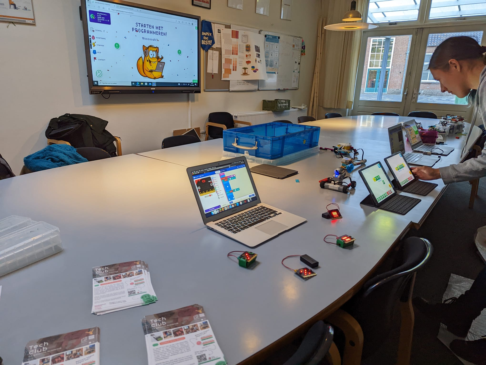
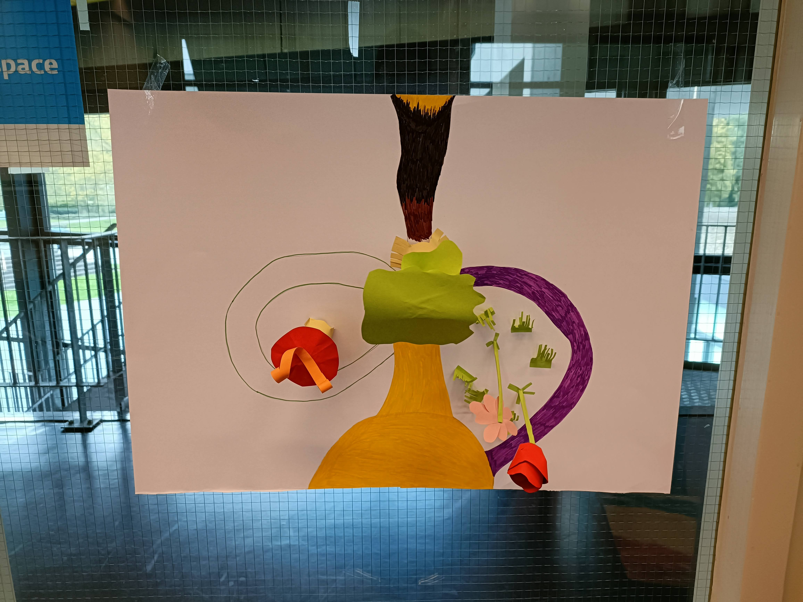
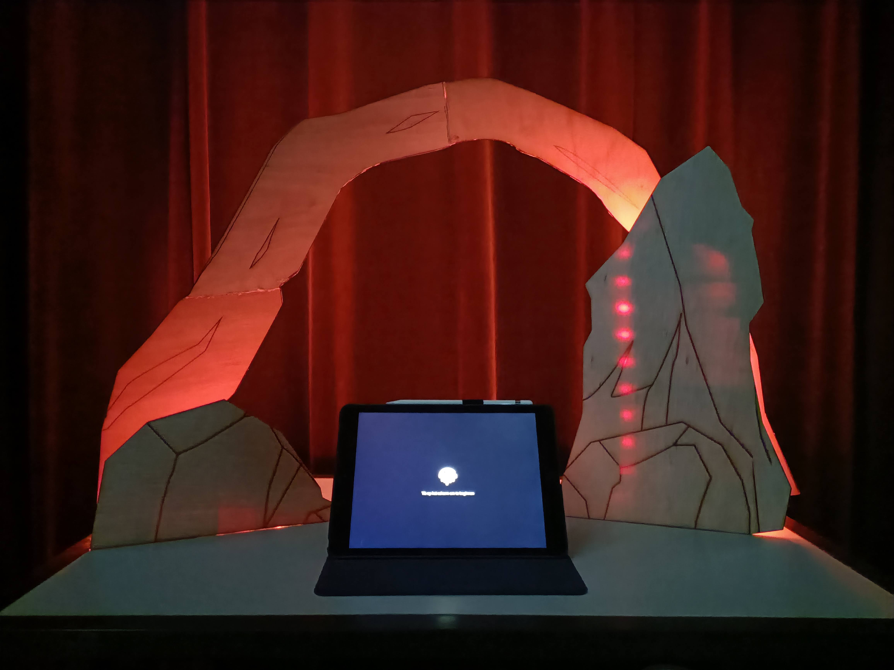

projects
Sort the projects by clicking on the tags below!

Website by me
1.1 Webmagazine
In this project, I designed and developed a non-responsive website titled Theatre Inside, which is best viewed on desktop. The entire process, from the photography and writing to the visual design and coding, was completed by me. This project helped me combine multiple skills into one cohesive product.
I enjoyed working on this project because it allowed me to experiment with various skills, such as writing, design, and research, while also improving my HTML and CSS coding abilities.It was cool to implement them in one final product.
Learned
- Photography
- Visual design
- Design research
- Writing skills
- HTML & CSS
- Adobe XD

Logo by me
1.2 Sedentary behaviour
The second schoolproject's goal was to design an app which should make people more aware of their sitting behaviour. My app is called: GamerUp. As the name suggests, my target audience were: gamers. I researched different articles about sitting behaviour, apps, gamers and a combination of the three.
To help us understand human behaviour a bit better, we had a subject in which we learned about different psychology approaches to human behaviour. It was quite an interesting subject but, because of my background in dramatherapy the content was familiar
In addition, we learned how to program a data visualisation using p5.js.
Learned
- Adobe XD
- p5.js & API integrations
- Visual design
- Primary & secondary research
- Adobe Illustrator
- UI/UX design
- Design research

Program by me
1.3 Gen-art
The third period revolved around exploring your own creative process as an artist. We could create anything we wanted using an Arduino, with the only condition being that it had to use random input to generate the final work. After experimenting and failing multiple times, I finally created my own generative landscape, which you can interact with using an Arduino.
The process was quite a rollercoaster! I explain it in more detail in this video. I eventually made the program into a pc app that doesn't use the Arduino, but I must admit, it’s much less satisfying without the Arduino.
Learned
- Processing (Java)
- Unreal Engine
- Arduino
- Film design
- Premiere Pro
- Design research

Photo by Chayenne Noben
1.4 Code4kids
This schoolproject was a group-project, where we had to design a workshop that would teach kids how to code using p5.js. We later gave this workshop to kids aged 11-12. As a group, we also designed our 'company' website, which I coded with some help from Lanka Kalmijn. In addition, I designed the workbook, though the graphics were done by Albert Kuijper.
Overall, I loved the project. It was the first time I truly felt what the study was about: designing, making, testing, and implementing something for the benefit of the target audience..
Learned
- Teamwork
- Adobe XD
- InDesign
- Premiere Pro
- Primary & secondary Research
- Film design
- jQuery

Poster by Milène Jacobs
2.1 User experience design
The second year started with Centre Céramique (library/museum) asking us to improve their exposition of cultural heritage. Together with Bram Stessen, Jesper Hogervorst, and Milène Jacobs, we came up with the Scavenger Scroll. It's similar to a scavenger hunt (hence the name), where visitors walk through the building using an app and a paper scroll, following a storyline, solving puzzles, and discovering artifacts along the way.
We documented the concept in a pdf and sketched our prototype in VR to bring the to life.
Learned
- Teamwork
- VR sketching
- (Paper) Prototyping
- Testing with users
- Design Thinking
- Primary & secondary Research

Website by Milène Jacobs and me.
2.2 Multimedia design
After UX design, we moved on to Multimedia Design, which was quite different from what I was used to. The first few weeks included lessons on storytelling and documentary-making. Afterward, our task was to create an online interactive story about the social side of the energy transition. I teamed up again with Milène, who did most of the illustrations while I programmed the website.
At some point, the project became quite stressful—we lost the structure and overview, and both of us caught COVID, which left us unable to do much for a week. But in the final week, we received some valuable feedback, and it became a race to the finish. In the end, we were really proud of the result.
Learned
- Teamwork
- Adobe XD
- PHP, HTML, CSS & Javascript
- Primary & secondary Research
- Premiere Pro
- Storytelling
- Documentary
Photo by Demi van Run

Online exposition on Mozilla Hubs by me
2.3 & 2.4 Project: Utopia
For the last half of our second year, we had the chance to choose from five projects. I picked the STEAM project, where we taught VR lessons to kids, letting them build their own utopian world. This was a team project with eight participants in total. Since the project spanned half a year, there’s a lot to say, but I'll keep it brief.
An important detail: we worked with five different stakeholders: STEAM-Limburg, Kaleidoscoop, Bureau Europa (Museumnacht Maastricht) and primary schools: ZieZo! and De Poort. We gave three lessons, each lasting about 3 to 3.5 hours, to three different groups from ZieZo! and two at the poort. The main question from STEAM-Limburg was: "How can we implement STEAM education in primary schools on a small scale, in a practical and valuable way?"
We had only three weeks to prepare for the first VR lesson. Those weeks were spent doing research and contacting schools, but mostly getting familiar with the VR software.
The goal of the lessons was to teach the kids about VR technology and have them work together to create their own utopian worlds. The lessons, though exhausting, were an absolute blast and very rewarding. The kids adapted quickly to the new technology and worked well in teams to bring their utopias to life.
In the second half of the project, we split into subgroups to create the final product, showcasing our research and what we had learned. I teamed up with Demi van Run to create an online exhibition of all the worlds the kids made. Demi exported the VR files into Blender and cleaned them up, while I created the environment in Mozilla Hubs and added the worlds. Unfortunately Muzilla Hubs is no longer supported, thus the online expo doesn't exist anymore.
Learned
- Teamwork
- VR: SketchUp
- Primary & secondary Research
- Mozilla Hubs
- Teaching
- Presenting
Logo galactIQ Education
An open day on the Aloysius school
3.1 & 3.2 Internship galactIQ Education
"I went from an enthusiastic yet insecure go-getter, to a more confident and potential ADHD’er." These six months, I've grown tremendously at galactIQ Education, both professionally and personally. I felt supported in expressing myself and given the space to develop. I learned more than I ever expected. galactIQ Education is a company with a mission to create a smart EduTech platform, helping primary school educators teach technology to their students.
Choosing galactIQ was a no-brainer for me: I love coding, technology, and teaching. Though these interests are relatively new to me, I’m deeply passionate about them. From the beginning, I knew this was where I wanted to intern, and nowhere else.
During my time there, I worked with new technologies, taught kids, and developed my own research project. I also made significant progress on my personal learning goals, such as managing insecurity and learning to take breaks.
In terms of insecurity, I learned to recognize when I felt unsure and wasn’t afraid to ask for help. I grew more confident in my abilities. As for taking breaks, I became better at noticing when I needed a pause and speaking up about it. Having a structured schedule and a co-worker present helped me stay focuseed and motivated.
You can read more about the company, my experiences and responsibilities in the endreport I wrote.
Learned
- Teamwork
- Teaching
- Presenting
- Micro:bit
- Python
- Scratch
Thumbnail of the teaser
A paper prototype
3.3 Minor: Immersive Design
During this minor, I had the opportunity to create a VR experience based on a public domain story. I chose Alice in Wonderland because I wanted to encourage creativity and thinking outside the box. I conducted a brief research project on how to foster creativity, explored which public domain story would best fit, examined various interactions in VR, and delved into storytelling techniques.
The full research paper (in Dutch) can be found here.
The first few weeks were dedicated to research and learning Unreal Engine. By week 5, the paper prototype and concept really started to take shape, and after week 6, the actual world-building began. I invested a lot of time into this project because I enjoyed the creative freedom it offered. The final product consisted of the experience itself, the research, and a teaser video showcasing the experience.
Learned
- VR
- Unreal Engine 5
- Sculpting
- 3D scanning
- Animation
- Premiere Pro
Start screen FlintCraft
Working prototype as endproduct
3.4 Installation Design
In this minor, I had the opportunity to design an interactive museum installation for Museum Valkenburg. The topic I chose focused on prehistory, specifically flint. I have always found this period fascinating, even as a child. Thus, I set out to research the question: "What features must an interactive museum installation have to inform children up to age 13 about flint in prehistory?" You can view the full research document (in Dutch) here.
I began by researching how to engage an audience of children under 13 while allowing them to playfully learn about flint. Flint was a material with many uses, which reminded me of Minecraft, hence the name. I adapted the basic crafting concept of Minecraft to my installation idea.
Check the video of the final product here.
Learned
- Concepting
- Presenting
- Prototyping
- Lasercutting
- Researching
- Adobe XD

front cover of reasearch paper
4.1 The Narrative
I started my fourth year with the narrative minor, where we learned about different storytelling methods and the various conflicts used within them. To explore how storytelling is applied in films, we selected a movie from a list to watch and analyze by answering specific questions. I completed my movie analysis alongside a classmate.
In this minor, we had the freedom to create our own story and showcase it in whatever way we saw fit. I seized this opportunity to write a theatre play for my theatre kids. The script is written in dutch and is provided for viewing purposes only. Additionally, I created a concept trailer for the story using royalty-free audio and video.
Of course, the story didn’t just come out of nowhere. I conducted research on various genres, brainstormed ideas, and created mood boards to demonstrate my progress. This process involved experimenting with different elements, such as ink, cyan paper, and crayons. Alongside my visual research, I examined other practices relevant to my story. You can access the full research document (in Dutch) here.
Learned
- Writing
- Presenting
- Visual research
- Moodboarding
- Design Research
- Adobe Express

front cover of reasearch paper
4.2 Human Nature
In the "Human Nature" minor, we learned about (neuro)biology, genetics, psychoactive drugs and ethics. We had an introduction course to neurons, hormons and brain structures. After that we learned about DNA and RNA processing, which provided insight into how genetic information (genes) is converted into functional proteins. We examined the nature versus nurture debate, focusing on how genetic factors affect behavior compared to environmental influences. Behavioral genetics was a key theme, along with understanding electrical and chemical neurotransmission and the roles of neurons and neurotransmitters. Lastly we touched upon genetic research and correlations.
During the ethics module, we investigated a moral dilemma related to genetic research, prompting discussions about privacy, consent, and the responsibilities of scientists or familymembers.
In psychopharmacology, we studied LSD, examining its absorption, distribution, metabolism, and excretion, which highlighted the complex interactions between substances and the brain. Finally, we conducted a group study on the differences between men and women diagnosed with ADHD, gaining insights into if and how this condition manifests differently based on gender.
Learned
- DNA and RNA processes
- Behavioral genetics
- Ethics in the medical field
- Psychopharmacology
- Brain structure
Want more? Check the links down below